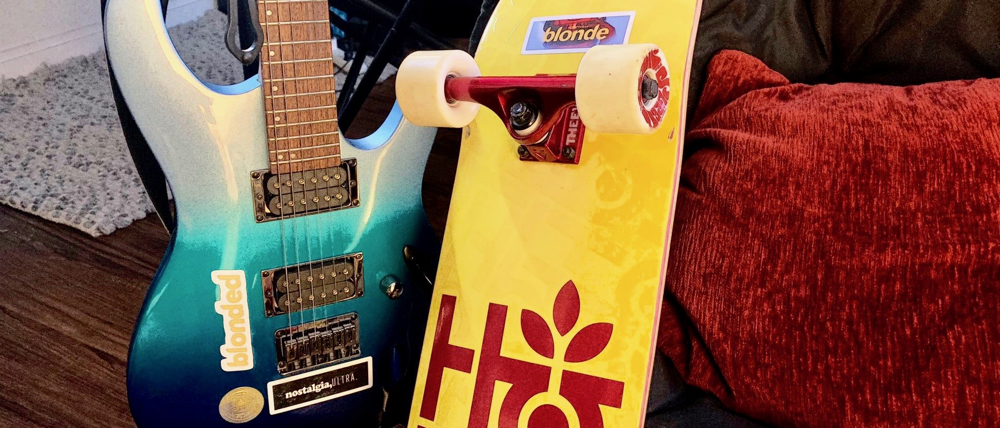

Collection of life memories and achievements.
Micro-Videos
- “Don’t forget to go outside when you are tired!” Shots in Memorial Drive, and opening of “Sleep Walker” by Joni Fatora, August 26, 2017 Video
- Part II of “Summer Life”, cello solo in Poetic Finale, August 21, 2017, Charles River Esplanade Video
- “Summer Life at MIT”, Poetic Finale, August 20, 2017, Warehouse and Ashdown. Video
- “Hello, East Coast”, June 24, 2017, Boston Logan International Airport. Video
- More to come..
Storage
- Winter 2018⁄19 Snowboarding Log
- WeChat Posts Migration
- “Channel Moments” 21:9 Cover Collection
- More to come..